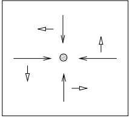
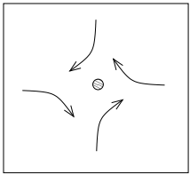
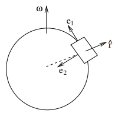
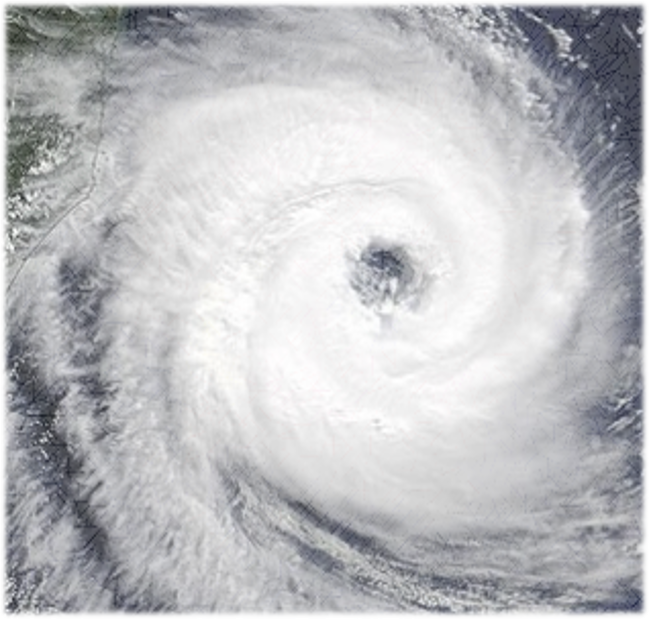

Noninertial Frame of Reference
- In many laboratory situations, the relevant distances and time scales are short enough so that a frame of reference attached to the earth (sometimes referred to as the laboratory frame of reference) is a suitable inertial frame of reference.
- In atmospheric, oceanic, or geophysical studies where time and length scales are much larger, the earth’s rotation may play an important role, so an earth-fixed frame of reference must often be treated as a noninertial frame of reference.




◀
▶